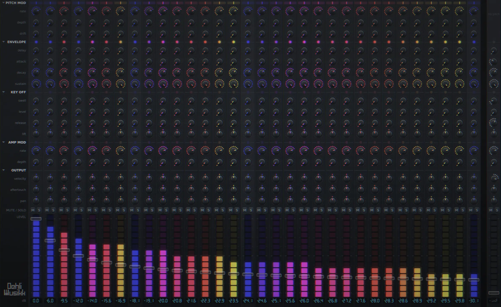
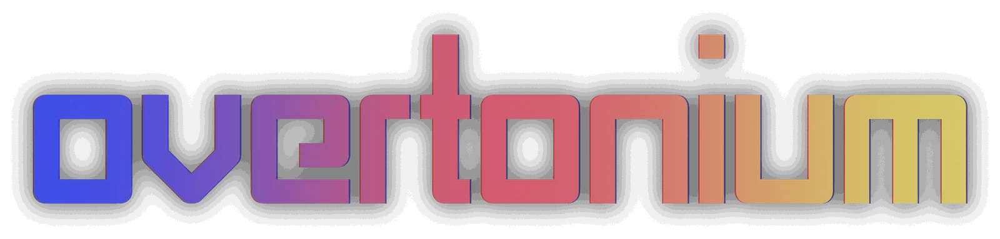
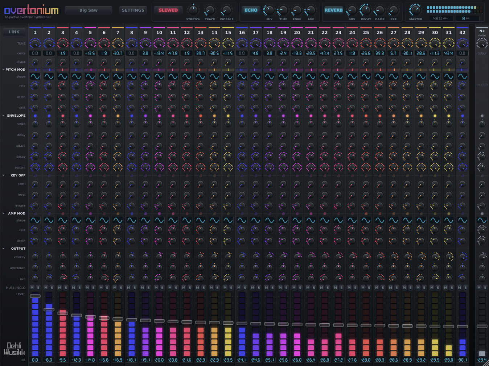

Overtonium, a 32-partial additive overtone synthesiser32-partial overtone synthesiser
An additive synthesiser laid out like a 32-channel mixer. Every channel is one sine oscillator locked to a harmonic of the played note, and every channel has its own tuning, envelope, modulation and place in the stereo field.
- Formats
- VST3, Standalone, AU on macOS, LV2 on Linux
- Platforms
- macOS, Windows, Linux
- Partials
- 32, plus a noise channel
- Licence
- AGPLv3
Additive synthesis usually hides its partials behind a spectrum drawing or a handful of macro controls. This puts all of them on the surface, as faders, and gives each one the controls a channel on a desk would have. Shaping a sound is mixing it.

The control worth reaching for first
TUNE sweeps each partial continuously between equal temperament and just intonation. At the just end the partial sits at an exact whole-number ratio with the fundamental and the whole stack fuses into one timbre. At the equal end each partial snaps to the nearest semitone and the same stack smears into a chord.
Two of the factory presets, Just Saw and Equal Saw, are identical except for that one control. They sound nothing alike.
Nothing about the tuning is hard-coded. For harmonic n the just interval is 1200 * log2(n) cents,
the equal position is that rounded to the nearest semitone, and TUNE dials in the remainder.
The tuning system works through it, along with stretch, the six keyboard temperaments and keyboard
tracking.
Where to go next
- TuningTUNE, inharmonic stretch, six historical temperaments on any root, and how the spectrum thins as you play up the keyboard.
- ControlsEvery knob on a channel and on the bar: envelopes, modulation, ganging, the lamps and meters, and the master effects.
- PresetsThe sixteen that ship, what a preset carries, and where your own are kept on each platform.
- InstallInstallers for macOS and Windows, a zip for Linux, what to do when a host does not see it, and building from source.
Questions
- Which hosts does Overtonium run in?
- It builds as a VST3 on macOS, Windows and Linux, an Audio Unit on macOS and an LV2 on Linux, so it loads anywhere those formats do. There is a standalone build as well.
- Is Overtonium free?
- Yes, and free software rather than only free of charge. It is released under the AGPLv3, which follows from JUCE, and the whole source is on GitHub.
- What is additive synthesis?
- Building a sound by adding sine waves together rather than by filtering a rich one down. Every timbre is a stack of partials at different frequencies and levels, and additive synthesis hands you those partials directly. Overtonium gives you 32 of them, one per mixer channel.
- Can Overtonium do microtonal tunings and just intonation?
- Both, and separately. TUNE sweeps each partial between its equal-tempered position and its exact whole-number ratio. The keyboard underneath is tuned on its own, to equal, just, Pythagorean, quarter-comma meantone, Werckmeister III or Young, on any root, at any reference pitch from 415 to 466 Hz.
- Does Overtonium support MPE?
- Yes. With MPE switched on, pitch bend and pressure arrive per note, and pressure has its own amount on every one of the 33 channels. An ordinary single-channel keyboard plays either way.
- How much CPU does Overtonium use?
- Eight voices of 32 partials each, with every modulator running, costs about 7% of one core, and sixteen voices about 14%. Turning the render rate down is a real saving: at 8 kHz the whole voice pool costs a fifth as much.
Where it came from
Overtonium is the third instrument in a line, and the first that generates its sound rather than playing it back.
The first was the Voltage Controlled Cassette Organ, in 2023. A Korg CX-3 sampled through cassette tape, every note of every drawbar recorded as its own file. The tape was the point of it: wow, flutter and random warbles gave the organ a movement like a chorus or a rotary speaker, but without the fixed rate a modulation effect has. It was recorded to tape twice, which doubled it, and because no tape deck plays back the same way twice the two passes never quite agreed with each other.
The second was EDB-Orgel, in 2024, which kept the drawbar workflow and put four digital synthesis types under it instead of an organ.
Both gave every drawbar its own envelope and LFO, and that is the idea this one is built out of. A drawbar is a partial. Nine of them shaped separately already sounds unlike an organ, so thirty-two of them, each with a full channel of controls, is the same idea taken as far as it goes. Computing them rather than playing them back is what makes TUNE possible at all: a sampled partial is stuck at the pitch it was recorded at, and a computed one can be swept between equal temperament and its exact whole-number ratio.
The ancestry shows up in the details. DRIFT is the cassette's random warble, per partial. WOBBLE is the same thing under the whole instrument. The tape echo's two paths, each with its own motor speed and its own random stream, are the double tracking, and its AGE control never quite reaches zero for the same reason the two tape passes never agreed: a transport that held speed exactly would put the repeat back in mono, and there is no such transport.
Both earlier instruments are sample libraries, sold at Dehli Musikk. This one is free software.